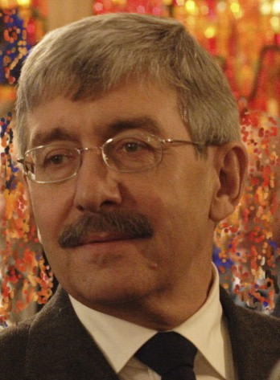

Я окончил школу в Нижнем Тагиле, большом пролетарском городе, где было вольготно уличным бандам, где курить и материться начинали в 12-13 лет. Веяния хрущевской «оттепели» почти не ощущались – хотя по радио часто поминалось загадочное «мирное сосущество Вани», дети продолжали разучивать песенку о коричневой пуговке (как поймали шпиона, потерявшего эту самую пуговку с нерусскими буквами), играли в войну между немцами и нашими. Мир искусства был представлен блатными песнями под гитару, фильмами о рабочем классе с Николаем Рыбниковым и Надеждой Румянцевой, пьесами Погодина о Ленине в местном драмтеатре (Ильича играл отец моего одноклассника Вовки Черкасова, «Чиры»). Запомнились соревнования: кто дальше цыкнет слюной. Мне это искусство не далось, как и умение свистеть, заложив пальцы в рот. При всем однообразии общества, встречались иногда и странные личности, самим своим существованием напоминавшие о затонувшем в 1917 году Граде Китеже. Были они и среди учителей моей 32-й школы, первой (с 1960-го) в Тагиле немецкой спецшколы. Именно в этой школе до войны учился Булат Окуджава, впрочем, тогда мы ни о нем, ни о его тагильских годах не знали. (Пересечение многознаменательное – 20 лет спустя я разнес в пух и прах роман Окуджавы «Путешествие дилетантов в «Литературной газете»). Хотя школа была по тогдашним понятиям элитной, некоторые из моих однокашников отправились после завершения среднего образования в тюрьму. Большинство выбрали другой путь, выбились, что называется, в люди…
В 1967 – 1970 я учился в МГИМО, в 1972 - 1978 - в Литературном институте имени Горького. Начал публиковать рассказы, публицистические очерки и критические статьи с 1973 года. В конце 1970-х годов приобрел известность нелицеприятным анализом творчества ряда «неприкасаемых» графоманов. Интересующихся ныне забытыми баталиями отсылаю к своей книге «Выбор пути».
Первой значительной работой считаю биографический роман о русском писателе-классике Алексее Писемском (1821 – 1881), вышедший в серии «Жизнь замечательных людей» (1986) после 4-х летнего терзания редакторами и цензурой. (Иной раз мне казалось, что стану первым писателем, «севшим» за убийство заведующего редакцией). В 1987 г. увидело жизнеописание знаменитого когда-то писателя Сергея Максимова (1831 – 1901), после большевистского переворота попавшего в черные списки. Ставлю себе в заслугу то, что первым (с 1981 года) стал публиковать произведения этого классика народоведения после десятилетий забвения.
На сегодня я автор 17 книг. И нескольких еще не изданных. Проза – фантастика и приключения (роман «Заблудившийся всадник» о борьбе за великокняжеский престол Руси в 11 веке, Роман «Завтрак на Голгофе» о событиях в Палестине в эпоху Иисуса, повести «Золотая баба» о событиях середины 18 века на Урале и «Командировка в тыл» о борьбе с антисоветскими повстанцами на Дальнем Востоке в годы Второй мировой войны). По повести «Золотая баба» снят популярный приключенческий фильм.
В 1991 году опубликована книга «Дело Гдляна. Анатомия политического скандала». В Москве издатели от нее шарахались, поэтому русский читатель ее почти не увидел, она вышла в Литве сразу после распада Советского Союза. В 1994 году появилась книга «Жириновский – кто он?» В них проанализирован феномен политического успеха личности, не отягощенной моралью, в эпоху смуты.
В поисках ответа, существует ли альтернатива той модели общества, которая базируется на скрытой манипуляции, я опубликовал несколько книг о современных политических лидерах Востока: султане Омана Кабусе бин Саиде, имаме исмаилитов Ага-Хане, правителе Ирака Саддаме Хусейне, эмире Катара Хамаде бин Халифе, султане Брунея Хассанале Болкиахе. Сложилась своеобразная серия, пополнившаяся жизнеописаниями строителя первой славянской империи Святослава и царя-мученика Николая Второго. Длинные перечни венценосцев хранят летописи многих стран, но в памяти народов остаются лишь немногие имена…
Интервью у самого себя или Монолог, прерываемый наводящими вопросамиИнтервью у самого себя или Монолог, прерываемый наводящими вопросами
В сентябре 2017 года я выпустил 17-ю книгу: среди них романы, повести, публицистика, сборник критических статей. Несколько книг остаются в рукописи – одни оттого, что не успели дойти до печати, был рассыпан набор. Так случилось с книгой «Последние солдаты последней империи», которую в 91-м году собиралось выпустить издательство «Интербук». Другие лежат в столе – все не могу остановиться в стремлении к совершенству. Это роман о временах Зороастра и Моисея, это «Бог любви, бог войны» - книга о религиозной революции в Европе. Но при всем разнообразии жанров, в которых я писал и пишу, главным – во всяком случае, по объему написанного и опубликованного – оказался биографический.
Не берусь утверждать, что найдется в мире другой автор стольких сочинений об абсолютных монархах, диктаторах, авторитарных лидерах партий. Мои книги о султанах Омана и Брунея, о Саддаме Хусейне, о духовном лидере загадочной исламской секты исмаилитов Ага Хане открыли русскому читателю незнакомый мир, о котором многие и сегодня имеют самое поверхностное представление. Книги и статьи о правящих элитах Катара, Саудовской Аравии, Йемена и других пока еще мало знакомых для нашего читателя стран – это не дань экзотике. В России, где монархия просуществовала 1155 лет, а коммунистическая диктатура всего 73 года, пример успешно развивающихся династических режимов воспринимается как образец исторической альтернативы. Интерес к монархической идее характерен для всех возрастов и социальных слоев и не угасает с годами.
Почему меня привлекают именно восточные монархи?
Потому что это подлинные правители, определяющие судьбы народов. В отличие от опереточных королей, сохранившихся в западных странах. Там монархия давно стала чем-то вроде политического Диснейленда, а сами «царствующие особы» напоминают куклу Барби и ее окружение. Причем охотно подыгрывают незатейливой «звездной» рекламе – репортажи с их помпезных свадеб, раутов с их участием, наконец, их отпеваний, давно сделались дежурными блюдами «розовых» журналов.
Британская монархия первой превратилась в эксклюзивного поставщика сенсаций для масс-медиа. На каждый чих из Букингемского дворца или Кларенс-хауса (резиденция принца Уэльского) слетаются толпы репортеров, готовых оповестить мир о том, во что была одета королева, или одарить сенсацией о том, что принц Чарльз торгует экологически чистой морковью. Папарацци стаями вьются там, где можно подстеречь монарших особ – и, если повезет, запечатлеть Виндзоров неглиже; к их услугам любой таблоид. Этим значение династии, пожалуй, исчерпывается. Есть в такой десакрализации образа власти что-то глубоко постыдное…
А на Востоке все по-настоящему? То есть: величественно, сурово и непонятно.
Есть и это. Но главное: правящие династии Востока приняли вызов времени и встали во главе процесса модернизации своих стран. Иначе они давно превратились бы в пережиток ушедших эпох. Некоторым гонка с временем не удалась. Погорел на затеянной им «белой революции» шах Ирана. Бесславно завершилась история последней на земле индуистской династии в Непале. Когда я приезжал в эту страну, она еще управлялась всенародно любимым Бирендрой, а через пару лет монархию смели и усадили на трон коммунистического премьера…
Но несмотря на отдельные «нетипичные случаи», можно говорить об успехе таких режимов?
Несомненно. Они проявили динамизм, восприимчивость к новым идеям. И это несмотря на то, что некоторые династии пережили множество исторических эпох и социально-экономических укладов. Например, нынешний султан Брунея – двадцать девятый представитель династии Болкиах, правящей с 1405 года.
Имам исмаилитов, которого можно образно назвать монархом без территории, руководит религиозной общиной, рассеянной по всем континентам – ее численность около 20 миллионов. Как и подобает правящим персонам, помимо наследственного титула Ага Хан (Великий Вождь), пожалованного шахом Ирана в начале XIX века, он носит титул His Highness (Его Высочество), присвоенного британской королевой. Корни этого рода уходят в седьмой век, нынешний Ага Хан IV считается потомком пророка Мухаммеда в 49 поколении. А со стороны матери его род возводится к английскому королю Эдуарду Третьему (XIV век).
Ага Хан стал не только символом сказочного богатства, но и примером успешной адаптации традиционного сообщества к реалиям современной цивилизации.
Стоит подробнее рассказать о сказочном богатстве. Названные персонажи светской хроники столь же часто появляются в списках журнала «Форбс». Каково происхождение гигантских состояний?
Если откладывать по монетке каждый день в течение тысячи лет, можно добиться впечатляющих результатов. А в жизни восточных царей, шейхов и имамов случались и более урожайные дни. Так в день Алмазного юбилея (60 лет руководства исмаилитской общиной) предшественника нынешнего Ага Хана было произведено ритуальное взвешивание уважаемого руководителя на стадионе в Карачи. В присутствии десятков тысяч единоверцев на весы взобрался массивный господин в тюрбане и парчовом облачении. Исмаилитами всего мира было собрано почти 250 фунтов бриллиантов и промышленных алмазов, чтобы уравновесить вес имама.
Что касается султана Брунея, одно время возглавлявшего список самых богатых людей планеты, основой его состояния являются нефть и газ. Хотя по их запасам Бруней далеко уступает многим странам, разумное использование ресурсов страны обогащает не только правителя. В регулярно публикуемом рейтинге Всемирного Банка по расходам государственного бюджета на душу населения султанат стабильно занимает первые места (почти 25 тысяч долларов США). Для сравнения: Россия в седьмой десятке, расходы казны на каждого гражданина – на порядок меньше.
Когда у вас есть нефть, несложно прослыть богатым и добрым царем-батюшкой. Не надо крутиться, проводить реформы. Можно править дедовским способом…
Очень спорное утверждение. Есть немало стран, где нефть также в изобилии, но жизнь там сплошной кавардак, люди едва сводят концы с концами. Примеры такого рода являют Ирак и Нигерия.
А вот тот же Бруней может служить образчиком того, как традиционная политическая система справляется с задачей модернизации и адекватно отвечает на вызовы новой эпохи. Во время великого азиатского кризиса (отголоском которого был российский дефолт 1998 года) султанат успешнее других соседних стран прошел полосу испытаний. Для сравнения, гигантская, чрезвычайно богатая нефтью Индонезия погрузилась в смуту: пал тридцатилетний режим Сухарто, отделился Восточный Тимор, началась партизанская война в провинции Ачех.
Представление о монархическом режиме как о чем-то застойном не выдерживает критики – этот стереотип рожден левыми «интеллектуалами». Беру это слово в кавычки, ибо ничего особо интеллектуального в кидании комьями грязи нет.
В монархических странах нередки перевороты; не справляющийся с вызовами времени правитель отправляется на заслуженный отдых, а поддержанный элитой его преемник круто поворачивает штурвал государственного корабля, чтобы противостоять враждебной стихии. Так было в Омане – наследник престола Кабус бин Саид в ходе вооруженного переворота отстранил от власти своего отца и добился перелома в почти безнадежной ситуации – большая часть страны оказалась под контролем коммунистических повстанцев, они были уже в пределах минометного выстрела от султанского дворца. Так было и в Катаре, где преклонных лет эмир явно не справлялся с задачами новой эпохи. Отстранивший его от власти сын – Хамад бин Халифа – за неполных два десятилетия превратил маленькое княжество, даже название которого путали с названием болезни, в известную, уважаемую и очень динамичную страну.
Почему именно богатства восточных властителей становятся притчей во языцех? Блеск их сокровищ совершенно затмевает скромных западных собратьев. Букингемский дворец - просто избушка в сравнении с гигантским комплексом, в котором обитает султан Брунея.
Это легко объяснить. За последний век общественная мораль на Западе претерпела значительные изменения. Кичиться богатством стало неприлично – ныне это свойственно разве что звездам шоу-бизнеса. На Востоке до сих пор сохраняется отношение к богатству, характерное для всех древних обществ. Хвастаться достатком считалось тогда в порядке вещей – настоящий мужчина всегда добудет себе богатство мечом. Напротив, бедность презирали как удел слабых и трусливых. Чем богаче вождь, тем, следовательно, он храбрее и удачливее – потому все удальцы тянутся к нему, становятся под его знамена. Была прямая выгода тому, кто всех перехвастает – именно к нему стекутся лучшие витязи, а, значит, он получит реальные шансы добыть мечом новые богатства. Когда викинги возвращались из дальних походов, они обвешивались золотыми серьгами, браслетами, ожерельями, их лица были умащены розовым маслом, нарумянены, губы накрашены – дорогая заморская косметика тоже почиталась символом роскоши.
Восток, несколько столетий находившийся в вассальном подчинении у колониальных империй, ныне как бы стремится компенсировать былое унижение, показав состоятельность своих лидеров. Брунейцы очень гордились, когда их султана называли самым богатым человеком на земле. Если бы не это, что знали бы о крохотной стране и знали бы о ее существовании вообще? Думаю, когда монарх уступил почетное первенство Биллу Гейтсу, это было большим ударом для национального самолюбия.
Эту разницу восточного и западного менталитета можно с особой наглядностью показать на примере Ага Хана. Он живет в своем имении Эглемон под Парижем. Роскошный старинный парк скрывает резиденцию имама, которую он отнюдь не стремится демонстрировать журналистской братии. Одевается столь буднично и просто, что не зная его в лицо, спутаешь с любым клерком Секретариата, расположенного на территории того же имения. Но когда Ага Хан прилетает на своем серебристом «Фальконе» к азиатской или африканской пастве, он является перед нею в парчовом кафтане и смушковой папахе. Возвращаясь в Европу снова чувствует себя как рыба в воде среди лидеров ведущих держав и воротил большого бизнеса. Он и сам считается удачливым бизнесменом. Многие его проекты, поначалу считавшиеся рискованными, впоследствии были признаны эталонами бизнес-интуиции и расчета. Один лишь пример: знаменитая сегодня Коста Смеральда, место отдыха мировой элиты, было присмотрено Ага Ханом во время плавания на яхте у берегов Сардинии. В начале 1960-х это было дикое побережье – через десять лет консорциум во главе с Ага Ханом превратил его в рай для богатых и знаменитых.
Во дворце султана Брунея глаза начинает ломить от блеска позолоты. В тысячах комнат и множестве залов под золотыми куполами, наверное, и сам хозяин может заблудиться. Но ведь это не ему нужно, это тешит гордость брунейцев.
Значит роскошь не самоцель, а инструмент воспитания национального самосознания? Может это и есть внешняя оболочка национальной идеи – того, что днем с огнем ищут у нас четверть века и никак не могут найти? Может быть, не стоит напрягать мозги – просто выбираем своим знаменем роскошь? Или даже гламурность…
Стремясь поразить внешне эффектными деталями монаршего житья-бытья журналисты часто упускают главное: личность самодержца. В конце концов, у каждого из них есть роскошные дворцы, колесницы и воздушные суда. Тем не менее, про «Боинг 747» стоимостью в один миллиард, принадлежащий султану Брунея, где только не прокричали, а вот о том, что он сам ведет этот гигантский самолет, отправляясь с визитами во все концы земли, мы не узнаем.
Жизнь монарха это не срывание цветов удовольствия. Она наполнена весьма напряженной деятельностью, поминутно расписана на много недель вперед. Султан Омана ежегодно в течение двух-трех месяцев объезжает селения нескольких вилайетов страны, выслушивает старейшин, принимает петиции, вникает в проблемы людей, а затем до глубокой ночи принимает в своей палатке, поставленной посреди пустыни, должностных лиц и иностранных визитеров. Ага Хан большую часть своего времени проводит в перелетах по Третьему миру, инспектируя объекты развития: школы, больницы, жилье для малоимущих. Когда мне пришлось проделать недельный тур по госпиталям и богадельням, я чувствовал себя совершенно измочаленным. Удивляюсь до сих пор, как хватает имаму сил и терпения десятилетиями не сходить с этой бесконечной дистанции. Наверное, помогает его хорошая спортивная подготовка.
Кстати, о спорте. Хорошо известно об увлечении султана Брунея игрой в поло. Это ведь забава не для бедных людей. Наверное, монаршие особы отдают предпочтение элитным видам спорта?
Я не слышал, чтобы султаны «забивали козла» в домино. Но понятие элитарности очень условно. Возьмем поло. Его родина – тот регион Центральной Азии, где ныне находятся Афганистан и Северный Пакистан. Там и по сей день в него играют все, от шейха до простолюдина. Но вряд ли ошибусь, если предположу, что синхронным плаванием в тех местах увлечены немногие.
Дело не столько в виде спорта, сколько в достигнутых результатах. Ага Хан в студенческие годы был одной из футбольных звезд Гарвардского университета. А как горнолыжника его даже пригласили в олимпийскую сборную Великобритании.
Как-то не очень сочетается представление о древних традициях, о пышном великолепии освященных веками церемоний, с образом духовного лидера, бегающего в трусах и майке за кожаным мячом.
Хотя я сказал, что царская работа – не столь уж простое и увлекательное занятие, это не значит, что герои моих книг – мрачно-величественные типы, отягощенные ворохом церемониальных обязанностей. При чудовищном обилии формальных моментов в их жизни, длинным шлейфом тянущихся в далекое прошлое, они остаются детьми своего времени. Разделяют нравственные представления своих подданных. Становятся жертвами легкокрылого амура, поражающего их то на светском приеме, то во время отпуска на модном курорте…
Много писали о женитьбах западных наследных принцев: один сочетался браком с журналисткой, другой с риэлторшей, третий с официанткой. Разумеется, все это обсасывалось как истории современных Золушек с одной стороны, как показатель глубокого демократизма династий, сохранивших свои троны – с другой. Восток эта тенденция тоже не обошла. Султан Брунея женился сначала на принцессе из младшей ветви царствующего дома, потом на стюардессе, а в третий раз – на телеведущей. Ага Хан поступил наоборот – сначала сочетался браком с моделью, а затем женился на немецкой принцессе.
Итак, полубоги спускаются с небес, чтобы быть «как все»?
На Западе – да. Но на Востоке до сих пор личность монарха воспринимают в ореоле священной ауры. Наиболее ярко такое отношение к правителю можно ощутить в Брунее. Далеко не полное имя монарха: Хаджи Хассанал Болкиах Муизаддин Ваддаула, Янг Ди-Пертуан и Султан Брунея Даруссалама. Янг Ди-Пертуан значит «данный богом». Тем не менее, всякий желающий имеет возможность увидеть султана лицом к лицу. Когда он посещает дистрикты своей маленькой страны, подданные выстраиваются огромным каре под полотняными навесами. Самодержец медленно движется вдоль шеренги и никому не отказывает: иному просто позволяет коснуться себя, другому повезет приложиться лбом к монаршей длани, а третьему удастся получить автограф. Если в толпе окажется иноземец, и ему позволят пожать или поцеловать монаршую руку.
Переезжая из дистрикта в дистрикт, обходя ряды подданных на очередном приеме, султан за несколько недель обменяется рукопожатием с большей частью населения Брунея. И такие ритуальные объезды градов и весей султаната повторяются из года в год. Это важная составляющая работы монарха. И не самая легкая.
По завершении месячного мусульманского поста (рамадан) страна отмечает главный религиозный праздник – Хари Райя. Целых три дня дворец Нурул Иман открыт для всякого желающего лицезреть правящую семью: за это время султан и его родня обменяются приветствиями с более 100 тысячами брунейцев и гостей из других стран.
У Кабуса бин Саида, султана Омана, другой стиль общения с народом – он предпочитает обстоятельные обсуждения с племенной элитой где-нибудь в пустыне. Когда спадет дневная жара, сотни людей в дишдашах (белых мужских платьях) рядами усядутся, чтобы послушать монарха. Потом станут подходить по одному и излагать нужды свои и своего селения, вручать петиции. Затем поэты прочтут свои вирши, адресованные вождю нации. А едва стемнеет, при свете костров блеснут клинки в воинственном танце.
Стихия султана – простор пустыни. Он и последний из своих дворцов – Хисн аш Шумух – повелел выстроить в традициях средневековых замков посреди голой равнины. Монарх испытывает отвращение к помпезности, трудно представить его на таких многолюдных пирах, какие устраивает его коллега с острова Борнео. Утонченный вкус монарха сказался не только на облике его резиденций – в стране всюду ощущаешь отпечаток эстетических предпочтений султана. Имеется даже обозначение официальной политики в области культуры – бьютификация (от beauty – красота). Затраты на амбициозные проекты составляют весомую часть бюджета – созданы симфонический и военный оркестры, центр музыкального наследия, построен оперный театр. Султан – известный меломан, прекрасно разбирается в музыке Запада и Востока, сам играет на лютне, старинном инструменте, доступном сегодня немногим виртуозам. Когда я спросил его, знает ли он русских композиторов, он без запинки назвал полдюжины имен, которые и не всякий русский сразу припомнит.
Еще один пример, характеризующий утонченность султана: четверть века назад по его заказу парфюмер Ги Робер (легендарный «нос» Франции) на основе уникальных природных компонентов, таких как оманский ладан, создал духи «Амуаж» справедливо именуемые «самыми драгоценными в мире» (не только по цене). Успех этого проекта вызвал многочисленные подражания – духи «Шейх», «Аль Шамс» – и создал моду на экзотические ароматы.
Но было бы ошибкой думать, что султан Кабус – изнеженный восточный сластолюбец. Человек, закончивший Сандхерстское военное училище, знает, что такое изнурительные марш-броски и многочасовые занятия на плацу. Много раз слышал как орет краснорожий сержант: «Левую, левую тяни, растак твою… Ваше Королевское Высочество!» Наверное, такая школа здорово взбадривала и принца Кабуса, и принца Хассанала, будущего султана Брунея, и принца Хамада, будущего эмира Катара…
Кстати о Катаре. Крохотный эмират в Персидском заливе ныне постоянно на слуху: то созданная эмиром «Аль Джазира» выдала в эфир очередную сенсацию, то открылся крупнейший в мире музей исламского искусства, то готовятся к проведению мундиаля-2022, то прошли переговоры ВТО на высшем уровне, то бизнес-класс авиакомпании «Катар эйруэйз» признан лучшим в мире. Или что-то негативное, но опять-таки на мировую сенсацию тянущее: поссорились с могущественными соседями Саудовской Аравией и Эмиратами, разорваны дипломатические отношения, введена сухопутная и воздушная блокада… Ревнуют арабские братья, нервничают, видя как нефтяное и газовое богатство эмирата конвертируется в политическое влияние, сопоставимое с влиянием крупных держав. Это богатство подпитывает честолюбивые амбиции правящей в Катаре династии Аль Тани, и недалек тот день, когда Доха (столица страны) станет таким же узнаваемым брэндом, как сегодняшний Дубай.
Книгу об эмире Хамаде бин Халифа я выпустил в 2013 году, через два месяца после того как он передал власть сыну Тамиму. За несколько лет этот выпускник Сандхерста (это уже фамильная традиция) приобрел серьезный опыт государственного руководства, ибо, в отличие от своих предшественников на троне, начинал самостоятельное правление в условиях непрекращающейся политической непогоды, получившей название «Арабская весна». Он также мог бы стать героем книги, сюжет которой изобилует запоминающимися событиями и драматическими поворотами.
Надо сказать, что жизнеописания правящих восточных монархов – большая редкость. Сведения об их жизни тщательно оберегаются, папарацци в голову не придет подглядывать за венценосцем – можно схлопотать по первое число. Обычно биографические данные, доступные в официальных публикациях, крайне скупы. В этом контексте некоторые из моих книг – настоящий эксклюзив. Они появились в результате творческого обобщения обширного материала, собранного во время бесед с политической элитой, встреч с главными героями, поездок по соответствующей стране. В случае с Ага Ханом это несколько стран Европы, Азии и Африки.
Надо учитывать и то обстоятельство, что в некоторых странах до сих пор господствуют взгляды, не всегда привычные для европейца. Скажем, когда в Катаре шумно праздновали свадьбу наследника престола, это совсем не походило на типичные торжества этого рода. Местная пресса пестрела фотоснимками ликующих молодых людей – но ни единой девушки. И ни единого снимка невесты, так что населению эмирата нелегко было составить представление, на ком женился принц…
Когда встречаешься с сильными мира сего в их резиденциях, видишь их в окружении свиты, то, быть может, подпадаешь под очарование власти и великолепия? Но если предположить, что те же люди повстречались бы тебе в уличной толпе, в будничном антураже, смогли бы ты признать в них носителей особого шарма, увидеть некий ореол, неприметный для неопытного глаза?
Разумеется. Сидеть на стуле так, как сидит султан Кабус, может лишь тот, чьи предки почти три столетия восседали на троне. Когда я впервые увидел его, мне сразу вспомнились по ассоциации изображения фараонов на стенах египетских храмов – безукоризненная осанка, невозмутимость высшего порядка. В людях, о которых я пишу, ощущаешь прежде всего абсолютную раскованность, отточенность манер, умение слушать собеседника, тонкий, не ранящий юмор…
Монархов не так уж много осталось на земле. Какая книга будет следующей?
Не обязательно же писать только о ныне живущих. У меня есть книги о Святославе, первом строителе империи на Руси, о нашем царе-мученике Николае Втором. Чем дальше заглядываешь в прошлое, тем глубже понимание монархической традиции, значения выдающихся личностей как творцов истории. У меня всегда в работе одновременно несколько книг. Почти закончен интеллектуально-фантастический триллер о веке рождения монотеистических религий, проще сказать, об эпохе Зороастра и Моисея. Это будет продолжение истории из времен Иисуса – романа «Завтрак на Голгофе», вышедшего в 2008 году.
Он также был среди героев этой книги?
И да, и нет. Среди основных персонажей романа идет борьба за то, кто станет главой нового религиозного движения. Когда выдвигается явный фаворит, ему самому и некоторым другим героям кажется, что все фишки у него, в том числе такая важная, как сверхъестественные способности. Но этого оказывается мало. Нужно еще «что-то», чтобы стать Царем Небесным. Так и с земными царями – вроде бы такие же двуногие, как все. Ан нет, есть в них «что-то», чего нет у других.
Есть, конечно, разница в том, как писать о земных царях и о Царе Небесном. И все же есть что-то общее: венценосцы равняются на Него, ибо понимают свою миссию как служение в духе заповедей Всевышнего. Хотя далеко не у всех это получалось и в прошлом, и в наше время…